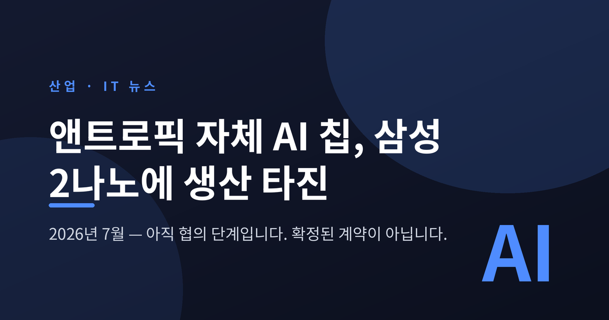
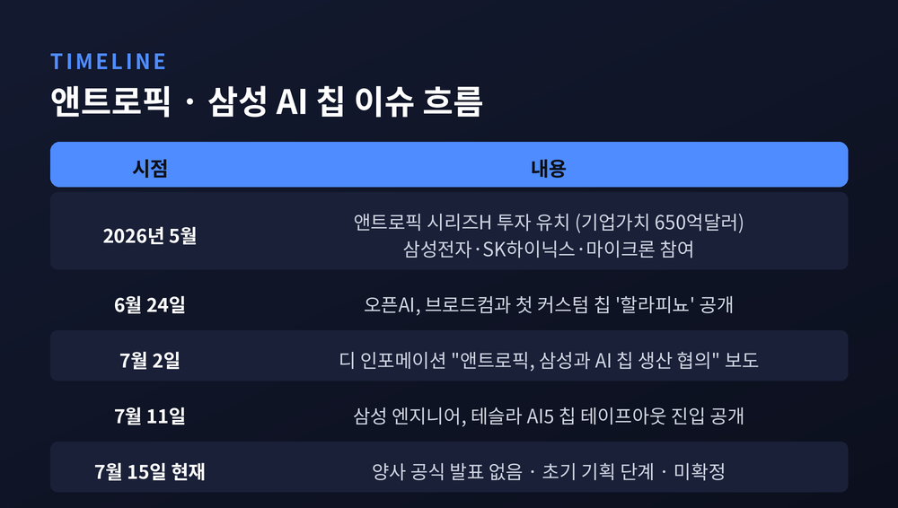
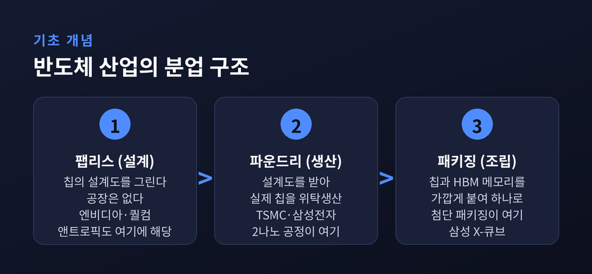
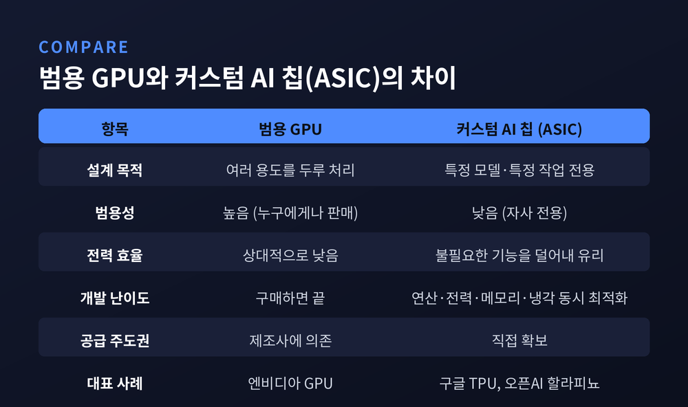
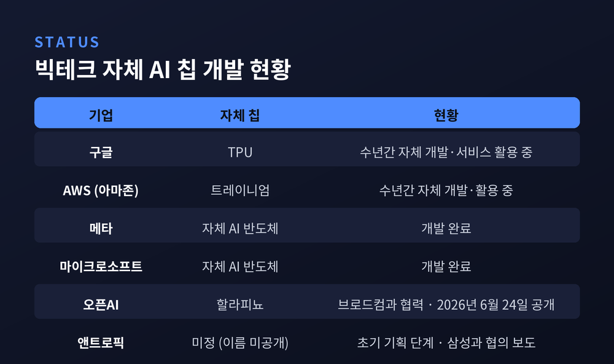
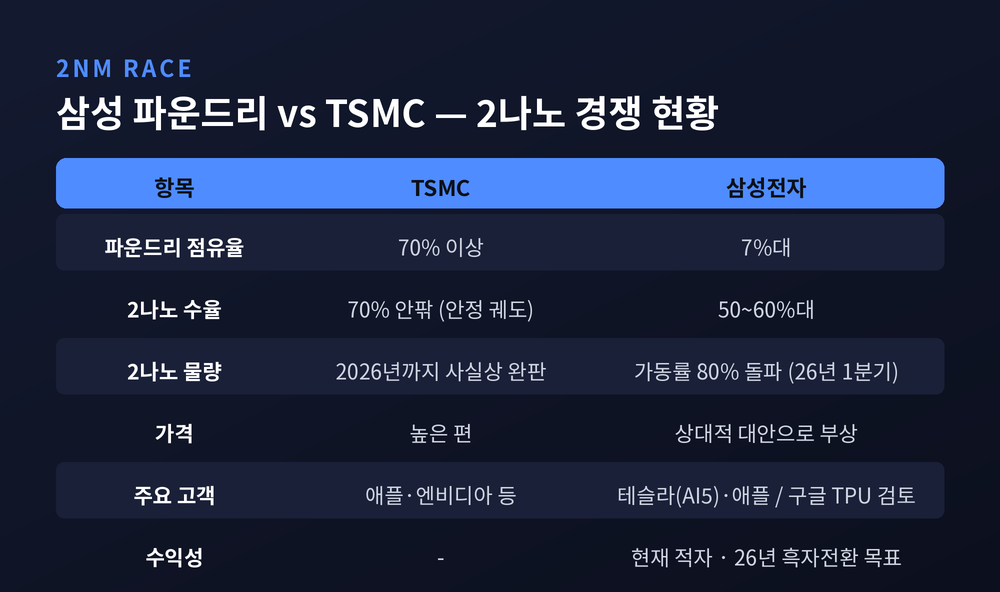
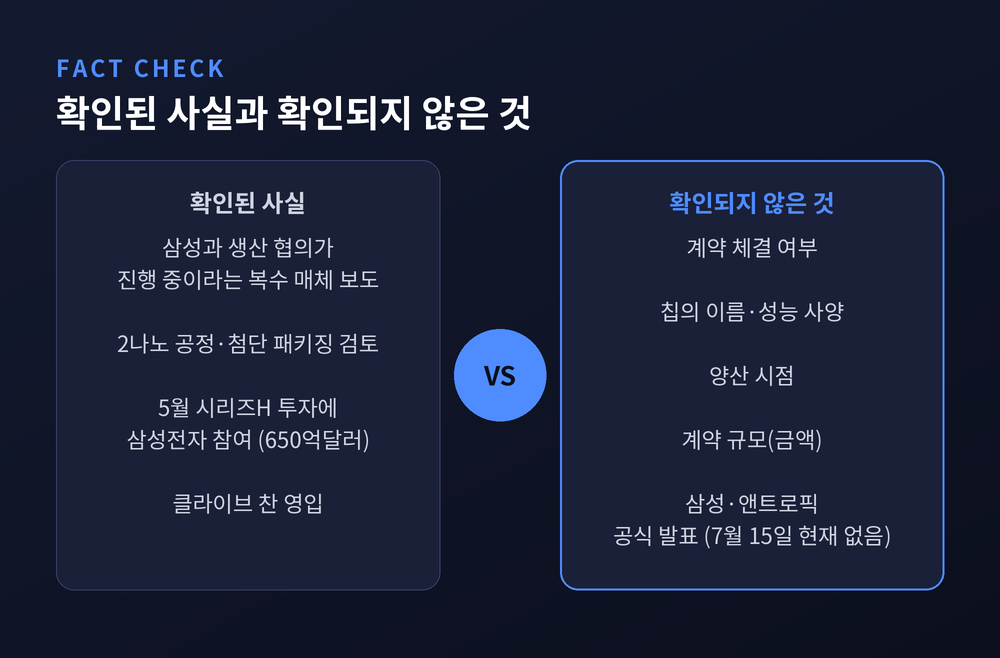

이번 글에서는 앤트로픽이 자체 AI 칩 개발에 착수하면서 삼성전자 파운드리에 생산을 타진했다는 소식을 정리해 보겠습니다. 반도체 용어가 여럿 등장하는 사안이라, 배경 지식부터 차근차근 풀어 설명하겠습니다.
한 가지 먼저 짚겠습니다. 이 건은 아직 확정된 계약이 아닙니다.
3줄 요약
1. 앤트로픽이 자체 AI 서버용 칩 개발에 착수했고, 생산 파트너로 삼성전자 파운드리와 협의 중이라고 디 인포메이션이 2026년 7월 2일 보도했습니다.
2. 검토 대상은 삼성의 2나노 공정과 첨단 패키징입니다. 다만 프로젝트는 칩의 용도와 성능을 정하는 초기 기획 단계이며, 세부 설계·검증·양산에는 진입하지 않았습니다.
3. 삼성전자는 "고객사 관련 내용은 확인할 수 없다"고 했고, 앤트로픽도 확인을 피했습니다. 양사의 공식 발표는 아직 없습니다.
2026년 7월 2일(현지시간), 미국 IT 전문매체 디 인포메이션이 복수의 관계자를 인용해 보도했습니다. 생성형 AI '클로드'를 만드는 앤트로픽이 자체 AI 서버용 프로세서 개발에 나섰고, 생산 파트너로 삼성전자와의 협력 가능성을 논의하고 있다는 내용입니다. 블룸버그가 같은 날 이를 인용해 후속 보도했고, 연합뉴스는 앤트로픽이 삼성 파운드리의 2나노 공정과 첨단 패키징 활용을 검토 중이라고 전했습니다.
다만 진행 단계는 분명히 해 둘 필요가 있습니다.
현재는 칩의 용도와 성능 목표, 서버 안에서의 구성 방식을 정하는 수준입니다. 세부 설계나 검증, 양산 단계에는 아직 들어가지 않았습니다. 반도체 전문매체 트렌드포스는 "물리적 시제품은 만들어지지 않았고 제조 일정도 존재하지 않는다"고 정리했습니다. 앤트로픽은 여러 칩 설계 회사와 동시에 논의 중인 것으로 전해집니다.
양사의 입장도 조심스럽습니다. 삼성전자는 "고객사 관련 내용은 확인할 수 없다"고 했습니다. 앤트로픽은 확인을 피하면서, 아마존 트레이니엄과 구글 TPU, 엔비디아 GPU가 앞으로도 컴퓨팅 전략의 근간으로 계속 쓰일 것이라고만 밝혔습니다.

이 뉴스를 이해하려면 반도체 산업의 분업 구조를 알아야 합니다.
반도체는 설계하는 회사와 만드는 회사가 나뉘어 있습니다. 설계만 하는 회사를 팹리스라 부릅니다. 엔비디아와 퀄컴이 대표적입니다. 이들이 그린 설계도를 받아 실제 칩을 위탁생산하는 회사가 파운드리입니다. 대만의 TSMC와 삼성전자 파운드리 사업부가 여기에 속합니다.
앤트로픽은 AI 모델을 만드는 회사이지 반도체 공장을 가진 회사가 아닙니다. 자체 칩을 갖고 싶다면 설계는 직접 하거나 외부와 협업하고, 생산은 파운드리에 맡겨야 합니다. 이번 논의가 삼성전자 파운드리 사업부를 향한 이유입니다.
2나노 공정은 회로 선폭이 2나노미터, 즉 10억분의 2미터 수준이라는 뜻입니다. 선이 가늘수록 같은 면적에 더 많은 소자를 넣을 수 있습니다. 성능이 오르고 전력 소모가 줄어듭니다. AI 데이터센터는 막대한 연산 성능과 전력 효율을 동시에 요구합니다. 그래서 차세대 공정의 가치가 큽니다.
첨단 패키징은 조금 다른 개념입니다. 완성된 칩들을 어떻게 붙여 하나로 만드느냐의 문제입니다. AI 프로세서와 고대역폭 메모리(HBM)를 최대한 가깝게 배치하면 데이터가 오가는 거리가 짧아집니다. 병목이 줄고 전송 속도가 빨라집니다. 삼성은 X-큐브라는 3D 패키징 기술을 갖고 있습니다.
예전엔 회로를 얼마나 미세하게 그리느냐가 전부였습니다. 지금은 어떻게 쌓고 붙이느냐까지가 경쟁의 무대입니다.

여기서 커스텀 AI 칩, 즉 ASIC과 범용 GPU의 차이를 짚어야 합니다.
엔비디아 GPU는 범용 제품입니다. 누구에게나 팔리도록 여러 용도를 두루 잘 처리하게 설계됐습니다. 반면 커스텀 칩은 특정 회사의 특정 모델, 특정 작업만을 위해 만듭니다. 쓰지 않는 기능을 덜어내고 필요한 연산에 자원을 몰아줍니다. 범용성을 포기하는 대신 효율을 얻는 구조입니다.
효율이 왜 그렇게 중요할까요.
대형 AI 모델은 수만 개의 프로세서가 연결된 대규모 서버 클러스터에서 돌아갑니다. 규모가 이 정도면 전력 효율이 몇 퍼센트만 개선돼도 절감액이 막대해집니다. 같은 전기로 더 많은 연산을 돌릴 수 있다는 뜻이기도 합니다. 여기에 특정 공급업체 의존도를 낮추고 하드웨어 인프라의 주도권을 쥔다는 목적이 더해집니다. 현재 AI 서버용 반도체 시장은 엔비디아가 절대적 우위를 쥐고 있습니다.
물론 쉬운 일은 아닙니다.
AI 칩 개발은 연산 성능만의 문제가 아닙니다. 전력 소비와 메모리 구조, 네트워크 연결, 냉각 효율을 동시에 최적화해야 합니다. 여기에 대량 생산까지 안정적으로 구현해야 합니다. 상당한 기술력과 시간이 필요한 작업입니다. 실제 제품 출시까지 이어질지 미지수라는 평가가 나오는 이유입니다.

시점부터 보겠습니다.
경쟁사 오픈AI는 2026년 6월 24일 브로드컴과 함께 첫 커스텀 칩 '할라피뇨(Jalapeño)'를 공개했습니다. 추론 전용 칩입니다. 초기 설계부터 제조 테이프아웃까지 9개월이 걸렸고, 고성능 첨단 반도체 분야에서 역대 가장 빠른 ASIC 개발 사이클로 평가받습니다. 와트당 성능이 현존 최고 수준을 상당히 웃돈다는 것이 오픈AI의 설명입니다. 2026년 말부터 초기 배치에 들어갑니다.
앤트로픽의 움직임은 이 발표 직후에 나왔습니다.
인력 영입도 눈에 띕니다. 앤트로픽은 7월 초 클라이브 찬을 영입했습니다. 오픈AI 맞춤형 칩 개발팀의 초기 멤버였던 인물입니다.
그렇다면 왜 삼성일까요. 이미 두 회사는 인연이 있습니다.
2026년 5월, 앤트로픽은 기업가치 650억달러, 우리 돈 약 100조원 규모의 시리즈H 투자를 유치했습니다. 여기에 삼성전자와 SK하이닉스, 마이크론이 함께 참여했습니다. 앤트로픽은 이 세 곳을 '전략적 인프라 파트너'로 명시하며 메모리와 스토리지, 로직 칩에서의 역할을 언급했습니다.
그런데 세 회사 중 로직 칩을 위탁생산할 파운드리를 가진 곳은 삼성전자뿐입니다. 업계가 5월부터 이 조합을 주목해 온 배경입니다.

삼성전자는 메모리 반도체에서는 세계적 경쟁력을 갖췄습니다. 파운드리는 사정이 다릅니다.
TSMC의 글로벌 파운드리 점유율은 70%를 웃돕니다. 삼성전자는 7%대입니다. 2나노 수율에서도 TSMC가 70% 안팎의 안정 궤도에 오른 반면, 삼성은 50~60%대에 머물러 있다는 것이 업계 분석입니다. 수치는 소스마다 다소 엇갈립니다. 삼성 파운드리 사업은 현재 적자 상태이기도 합니다.
다만 흐름이 조금씩 바뀌고 있습니다.
TSMC의 2나노 물량은 2026년까지 사실상 완판된 상황입니다. 가격도 비쌉니다. 공급처 다변화를 원하는 기업들에게 삼성이 현실적 대안으로 떠오르는 이유입니다. 2026년 1분기 삼성 파운드리 가동률은 80%를 넘어 1년여 만에 최고 수준을 기록했습니다. 흑자전환 목표 시점도 기존 2027년에서 2026년으로 앞당겨졌고, 일부에서는 3분기 흑자전환 전망까지 나옵니다. 어디까지나 전망치입니다.
고객사 확보 소식도 이어집니다.
테슬라와는 지난해 7월 165억 달러 규모의 계약을 맺었습니다. 그리고 2026년 7월 11일, 김정곤 삼성 파운드리 수석 엔지니어가 링크드인에 "테슬라-삼성 AI5 칩이 테이프아웃 단계에 진입했다"며 "2나노 공정을 사용해 테일러 공장에서 생산될 예정"이라고 밝혔습니다. 테이프아웃은 설계를 마치고 시제품 생산에 들어가는 관문입니다. 대량 생산 체제의 실질적 신호탄으로 읽힙니다. 텍사스 테일러 팹은 연말 가동이 전망됩니다.
구글도 차세대 TPU '아이스피시'의 일부 핵심 부품 생산을 삼성에 맡기는 방안을 검토 중입니다. 2028년 양산 목표입니다. 이 역시 검토 단계입니다.
한 반도체 업계 전문가는 MS투데이에 이렇게 말했습니다.
"AI 기업들의 경쟁력은 이제 모델뿐 아니라 전용 반도체와 인프라까지 포함하는 종합 경쟁으로 확대되고 있다."

여기서 가장 중요한 대목을 짚겠습니다.
보도의 결이 갈립니다. 디 인포메이션의 원 보도와 트렌드포스, AI타임스, MS투데이는 모두 "초기 협의 단계이며 실제 계약으로 이어질지 미지수"라는 쪽입니다. 반면 7월 13일 뉴스웍스는 익명의 업계 관계자를 인용해 "삼성전자 파운드리 사업부가 앤트로픽의 자체 AI 칩 생산을 맡기로 했다"고 보도했습니다. 문화일보는 "수주 유력"이라는 표현을 썼습니다.
후자는 익명 관계자 인용입니다. 2026년 7월 15일 현재, 삼성전자와 앤트로픽 어느 쪽도 공식 발표를 내놓지 않았습니다.
정리하면 이렇습니다. 협의가 오가고 있다는 것은 여러 매체가 일관되게 전하는 사실입니다. 계약이 체결됐다는 것은 아직 확인된 사실이 아닙니다. 칩의 이름도, 성능 사양도, 양산 시점도, 계약 규모도 공개된 바 없습니다.
한계도 남아 있습니다. 앤트로픽은 멀티 벤더 전략을 유지하겠다고 밝혔습니다. 자체 칩이 나오더라도 기존 칩을 대체하기보다 선택지를 하나 더하는 성격에 가깝습니다. 삼성의 2나노 수율은 여전히 TSMC에 못 미칩니다.

이번 사안은 하나의 수주 건으로만 보기 어렵습니다.
AI 기업들의 전략이 바뀌고 있습니다. 예전엔 좋은 모델을 만드는 것이 경쟁의 전부였습니다. 지금은 칩과 클라우드, 데이터센터, 전력 공급까지 AI 인프라 전반을 직접 확보하려 합니다. 앤트로픽의 자체 칩 프로젝트는 그 연장선에 있습니다.
파운드리 업계에도 파장이 있습니다. 첨단 공정과 패키징을 모두 갖춘 곳을 둘러싼 경쟁이 한층 치열해질 전망입니다. 박주근 리더스인덱스 대표는 뉴스웍스에 "에이전틱 AI 시대에 접어들면서 메모리와 파운드리를 원스톱으로 의뢰하는 게 더 유리해진 상황"이라고 진단했습니다. 메모리와 파운드리를 함께 가진 삼성의 구조가 강점이 될 수 있다는 뜻입니다.
물론 기대만 앞세울 일은 아닙니다. 수율이라는 숙제가 남아 있고, 협의는 협의일 뿐입니다.
※ 이 글은 정보 전달을 목적으로 하며, 투자 권유가 아닙니다. 언급된 실적 전망과 수율 수치는 업계 분석·전망치이며 확정된 수치가 아닙니다. 투자 판단과 그 결과에 대한 책임은 투자자 본인에게 있습니다.
끝으로 한 마디만 더 드리겠습니다.
이번 소식에서 가장 눈여겨볼 대목은 계약의 성사 여부가 아니라고 생각합니다. 세계 최고 수준의 AI 회사가 자기 칩을 만들겠다고 마음먹었을 때, 그 설계도를 들고 찾아갈 만한 곳으로 삼성이 검토 대상에 올랐다는 사실 자체입니다.
— 2나노는 이제 기술의 문제가 아니라 신뢰의 문제입니다.
결과가 어떻게 나오든, 삼성 파운드리가 시험대에 올랐다는 점은 달라지지 않을 것입니다. 그 시험의 채점표는 올해 하반기부터 하나씩 공개될 예정입니다.